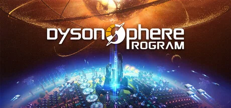
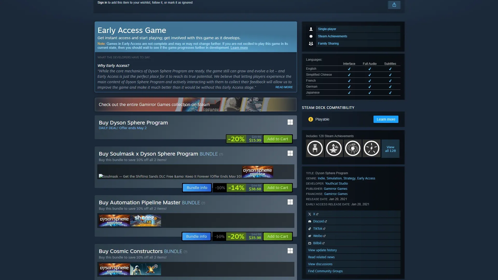
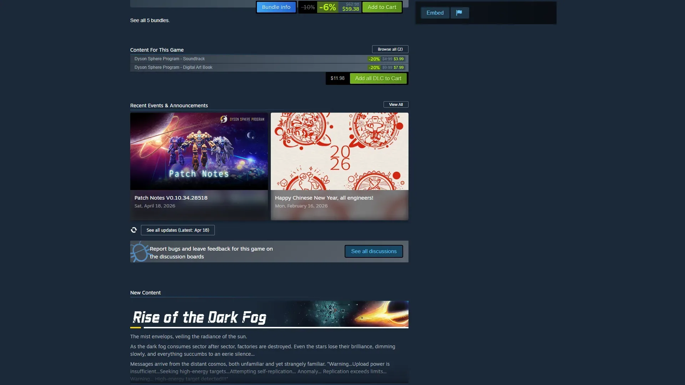
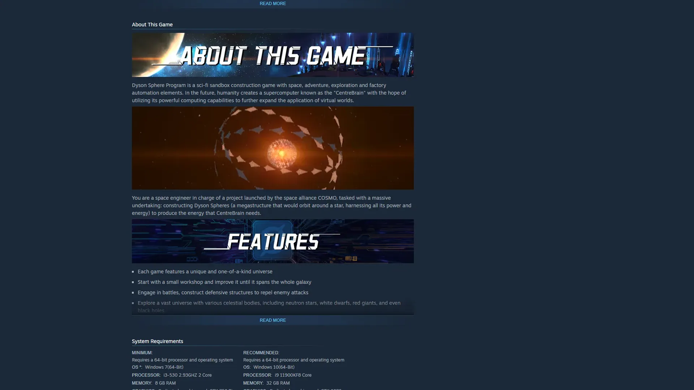
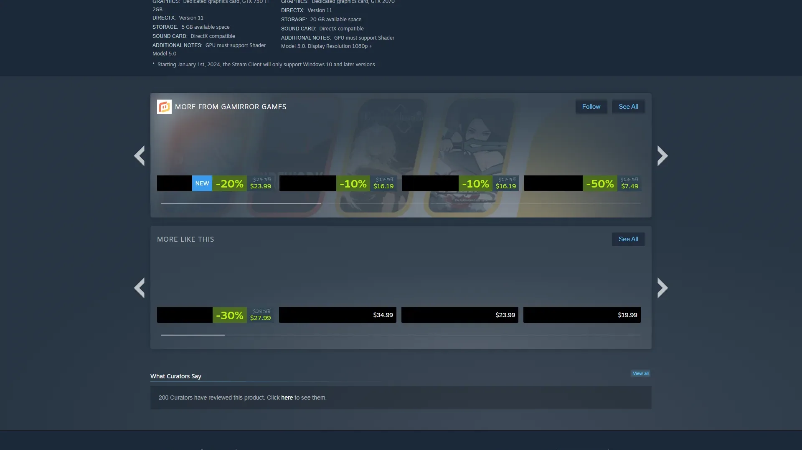
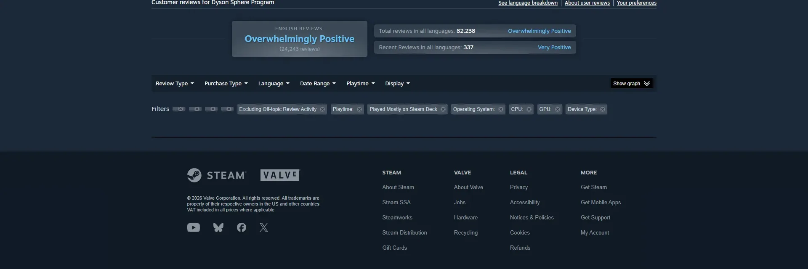

国产太空工厂自动化，建造戴森球的宏大目标。





想象一片远未来恒星工程时代——人类后裔文明 COSMO 把意识托管在量子计算矩阵 Centerbrain 中，需要海量算力支持，必须在多个恒星周围建造戴森球从恒星本身汲取能量。COSMO 派出大批机械体单元 伊卡洛斯分赴星簇执行恒星级工程任务。本作主舞台是从初始星球到整个星簇 64 个星系——你穿过草原星、冰封冻原星、火山熔岩星、海洋珊瑚星、潮汐锁定星、气态巨行星轨道。柚子猫工作室把从手工铁镐到恒星级工程整套科技演化压在一个国产 EA 长跑里。
你扮演伊卡洛斯——一台 COSMO 派遣的机械体工程师，意识由 Centerbrain 远程接管。开场你被空投到一颗温带星球，唯一指令是「建造戴森球，把恒星能量送回 Centerbrain」。从一颗石头开始构建恒星级工业文明——你必须徒手采矿冶铁，逐步解锁电力、化工、原油、星际物流、引力翘曲、白矩阵、戴森球节点。没有传统反派——你 vs 时间、电力崩溃、物流死锁、太阳帆轨道计算就是全部张力。柚子猫 5 人小团队用 EA 长跑做出国产工业骄傲。
那次你第一次把太阳帆发射器对准恒星、看屏幕里第一片帆挂上戴森球外壳节点闪光的瞬间，柚子猫工作室把恒星工程幻想做成中国独立游戏天花板——你打的不是怪，是「从一颗石头到一颗戴森球」这道刘慈欣式宇宙工程史诗；那场你为了赶建戴森球节点把电网拉到红线、工厂集体停摆的桥段——电力六代演化让你明白「文明的尺度由你的电网决定」；那次你跨星系引力翘曲飞过半个星簇、回头看初始星球只剩一个亮点的对话节点，恒星级幻想不是噱头。这不是关于打败敌人的故事，是「第一颗戴森球建在哪颗恒星」的故事——下一片白矩阵生产线在哪个星系？
恒星级工业 × 戴森球幻想，是柚子猫工作室把东方科幻黄金时代美学（刘慈欣式硬核宇宙工程想象+三体级别尺度感）和第二次工业革命建造视觉（传送带+冶炼厂+核电塔+引力翘曲塔）以及恒星级天体工程视觉（戴森球外壳节点+太阳帆阵列+恒星耀斑）三层缝合在跨星系工厂建造模拟外壳里的混血美学。底色是三体宇宙观 × Factorio 硬核工厂双重血统；变异在于把工业建造尺度从行星推到恒星——你最远期的工厂是一颗包裹太阳的几何外壳。
「恒星工程+宇宙工业幻想」视觉线跨越百年。1937 年奥拉夫·斯特普尔顿《造星者 Star Maker》首次想象戴森球概念雏形——本作幻想精神祖父。1960 年物理学家弗里曼·戴森发表戴森球理论，定义恒星级工程视觉范式。1968 年库布里克《2001 太空漫游》定义太空科幻工业美学母版。2008 年刘慈欣《三体》定义中文科幻黄金时代恒星级宇宙观——本作精神血统直接来源。2014 年克里斯托弗·诺兰《星际穿越》把恒星与黑洞工程视觉做到当代电影巅峰。2014 年Wube《Factorio》定义现代自动化工厂建造品类母版——本作系统骨架直接对标。2018 年柚子猫工作室成立 5 人团队启动 EA 长跑。2021 年《戴森球计划》Early Access 登场即登 Steam 全球热销榜——把恒星级工业幻想推到中国独立游戏新品类高度。
基于体验清单 · 审美偏好 · IP故事三维度综合选出
点击链接跳转到对应平台查看 · 仅整理外部链接